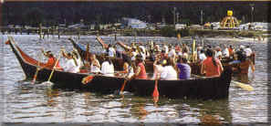
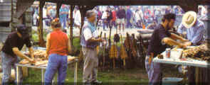

HOME
Welcome
Makah Days
Celebration
Aug. 28-30, 1998

Traditions we want to remind the US of (and ourselves as well.. ) 1. WHALE KILLING Here we are rowing around in our traditional whale killing boats (did we tell you we have no idea how to kill whales since no one in our tribe is alive who has ever done it) playing in the water trying to learn to row a boat again (did we tell you we usually use high speed power boats and the canoes are to make us look good). We have even brought in experts like... Allen Ingling to teach us how to kill them since, well, we have never done it... but it's tradition now so we better learn fast! 2. MAKING MOVIESDid you know that we have had video cameras for generations? We have had video cameras since before the wheel existed and that is why we are partnering with a German film crew to make a film about us KILLING whales... (and of course, they are paying us lots of money- see item #2)... Maybe they'll even teach us something about how to make it look traditional, us killing of these whales, these hollywood folks know a lot about special effects! 3. MAKING MONEYYes, of course we didn't traditionally use cash, and rather used tradable goods... but now... in the name of defining tradition.. we are in the business of making money and we want to teach all of our younger ones how to do it well! Remember, we need to plan for 7 generations ahead.. so we want to sell off every living and non-renewable resource now so that they don't have any work to do in the future and can just live off the money we made now. So, in an attempt to make more money, we are partnering with our traditional commerical brothers, the Japanese (sure we have never been to Japan, but some of their tourists have been here), and are selling our traditional whale flesh to them to , you got it, help with traditional item 2, making money and using up resources. Here is a picture of us at the fair w/ mock whale processing tables and a mock bartering system to teach our kids how to be good traditional salespeople...  4. Helping to create a traditional image overall This last activity is sponsored by our brothers in Seattle, the Denny Miller and Associates Public Relations firm who more than anyone have helped us to fabricate (uh, we mean rediscover) our heritage and traditional values... They will be here are the Makah Days celebration (after all, they are defining what a Makah is for us!) to help guide us through all of the other activities planned as well as to give workshops on effective use of white guilt media, how to make it look like we know what we are doing in canoes in the water, how to kill all remaining whales and log all remaining trees ( not that we need a lot of help with that- but we need help making it look traditional). So.. kids, brothers from all lands... come, learn with us about what it means to be Makah- hell, we are making it up, so you can too! |